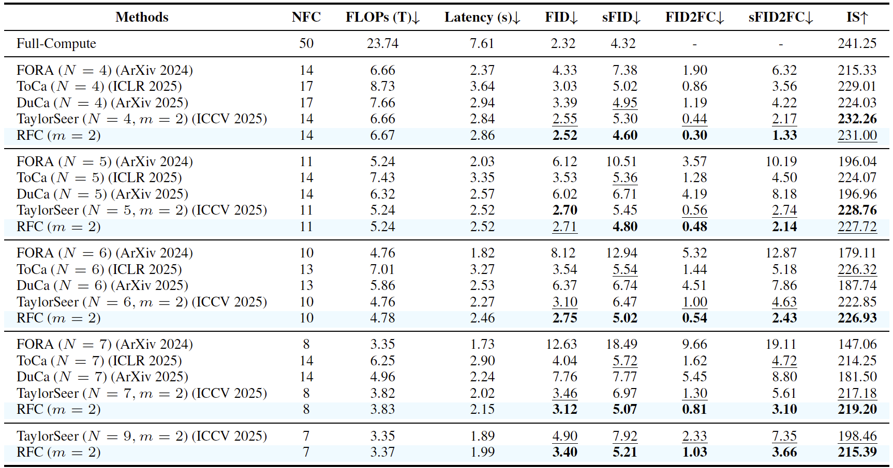
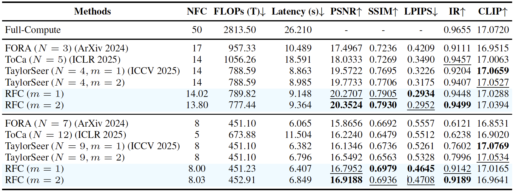
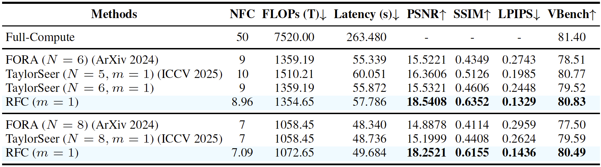

Relational Feature Caching for Accelerating Diffusion Transformers
ICLR 2026
Abstract
We propose relational feature caching (RFC), a novel framework that leverages the input-output relationship to enhance the accuracy of the feature prediction. Specifically, we introduce relational feature estimation (RFE) to estimate the magnitude of changes in the output features from the inputs, enabling more accurate feature predictions. We also present relational cache scheduling (RCS), which estimates the prediction errors using the input features and performs full computations only when the errors are expected to be substantial. Extensive experiments across various DiT models demonstrate that RFC consistently outperforms prior approaches significantly.
Quantitative Results



Qualitative Results
Images
Prompt 1
Videos
Prompt 1
Paper
|
B. Son*, J. Jeon*, J. Choi* and B. Ham (*equal contribution) Relational Feature Caching for Accelerating Diffusion Transformers In International Conference on Learning Representations (ICLR) , 2026 [Paper] [Code] [BibTeX] |
Acknowledgements
This work was partly supported by IITP grant funded by the Korea government (MSIT) (No.RS-2022-00143524, Development of Fundamental Technology and Integrated Solution for Next Generation Automatic Artificial Intelligence System, No.2022-0-00124, RS-2022-II220124, Development of Artificial Intelligence Technology for Self Improving Competency-Aware Learning Capabilities), the KIST Institutional Program (Project No.2E33001-24-086), and Samsung Electronics Co., Ltd (IO240520-10013-01).
BibTeX